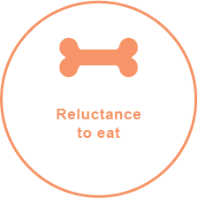
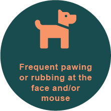
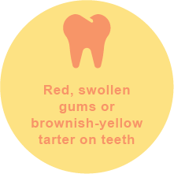
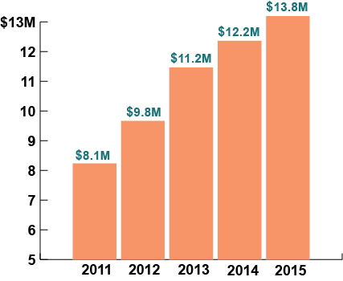

5
signs of ental desease in dogs and cats



Think your pet's teeth and fine?
Think again.
Number of pets showing signs of oral disease by age 3:
8 OUT OF 10 DOGS
7 OUT OF 10 CATS
Amount, in millions, spent by Nationwide members on pet dental conditions:
Periodontal disease
results when residual food, bacteria and tartar collect in the spaces between the gum and tooth, causing infection that spreads to the bone.
3 things you can do for your pet's teeth
1
Take your pet for a dental exam at least once a year.
2
Talk to your veterinarian about an at-home regimen.
3
Schedule regular veterinary dental cleanings for your pet.